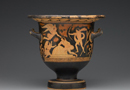
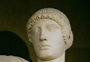
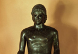
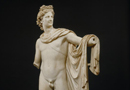
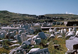
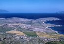

Apollo
Let’s first have a look at Apollo’s origins and development as a Greek god. He has been called by the German scholar W. F. Otto the ‘most Greek of the gods.’ If this is true, it is not so much for any peculiarly Greek development, as for the fact that he, in sculpture and function, become the ideal of Greek physical development. The young in Greece were raised with the ideal of Apollo in mind. As for his origins as a god, they are, as with so many of the deities we are looking at in this course, uncertain. He did not appear in the Mycenaean pantheon of gods and his name is absent from Linear B texts. Apollo is in the Greek pantheon a god connected with the sun from the 5th century B.C.E., and some people have suggested that he derived originally from Anatolia due to this connection. But even this cannot be certain. Hesychius, a later Greek grammarian, connected his name Apollo [in particular in its pre-Homeric form Apellon] with the Greek Doric dialectal word apella (ἀπέλλα) which means ‘assembly’, specifically the annual reunion of the adult tribesmen where the initiation of young men into the community takes place. This would fit very well with Apollo’s role in Greek society as a god who initiated young adults. These meetings are known also in Delphi, the major cult-site of Apollo at which we are going to look later today. Ultimately, Apollo is most likely a composite figure of several different influences.
A type of hymn, called the paean, was frequently connected with Apollo. In the Minoan pantheon we find an independent god Paiawon, who seems to lie behind the Greek god Paean. In Homer’s Iliad (book 5 line 401), Paean is treated as a god separate from Apollo, who is responsible for healing. But the two distinct deities came to be closely identified and Paean become an epithet of Apollo, himself a god closely connected to medicine and healing. Even in the Iliad, where as we have just seen Paean is treated as a separate deity, the young men of the Achaeans are said to sing a ‘paean hymn of Apollo’ (book 1. 473). This division of Apollo and Paean at times in the Iliad, alongside the connection of Apollo and Paean elsewhere, is perhaps demonstrative of an intermediate stage where the Greek concept of Apollo is blending with a figure derived from Minoan religion. Plutarch, a later Greek historian, reports that the Cretan paean was taken from Crete to Sparta, in the Peloponnese as a healing hymn and dance at the beginning of the seventh century, but such interaction was surely taking place far before this point. Apollo also seems to have a Syro-Hittite component. One difficulty of associating Apollo only with Minoan-Mycenaean culture or Dorian northwestern Greece is his famous attribute of a bow and arrow. (see image 1) He is not a god connected with hunting or hunters (such as his sister Artemis) so why does he carry one? This may be answered by looking to the Syro-Hittite Near East and the Semitic god Reshep. Apollo is, as his connection with Paean implies, a god of healing, but he is also a god of revenge and pestilence (the kind of contradiction we find in many gods). At the beginning of the Iliad Apollo rains down arrows upon the camp of the Greeks at the behest of the priest Chryses. These qualities are also found in Reshep, who is a god that shoots firebrands, and who carries the name Reshep of the Arrows. Importantly, a sanctuary of Apollo in Amyklai in the Peloponnese preserves the name of Reshep, (A)mukal, who seems to have passed into Greece from the Near East through Cyprus.
{kind=link}
Regardless, however of his origins, Apollo is certainly one of the most important gods of the Greek pantheon. He has a great number of characteristics and spheres of power: he is, as I have already said, connected with healing and purification, and destruction and care for the young as they are initiated into society, but also with prophecy, poetry, and music. His connection with the young is perhaps better displayed in religious practice than in mythology, whereas his other spheres are better represented in literature. But youth can be seen in the artistic representations of Apollo as well. In sculpture and vase painting he is always presented as a beardless youth with an extremely athletic body. (see images 2-4)
{kind=link}
{kind=link}
{kind=link}
Apollo is of course extremely prominent in Greek literature; as we are looking at today, one of the longer Homeric Hymns was dedicated to him. But he was also worshipped as an important deity around Greece. The two parts of the Homeric Hymn to Apollo deal with the foundation of Apollo’s two major cult centres in Greece, Delos (an island of the Dodecanese) and Delphi, and they provide us with an important insight into these two cults. Before we go on to talk about Delphi, let me say a few words about Delos. This island is in mythology connected with Apollo because of his birth there. The beginning of the Homeric Hymn to Apollo recounts his birth: Hail to you, blessed Leto, since splendid children you bore, Lord Apollo and archeress Artemis-her at Ortygia, him On Delos’ rocky isle, where against a tall mountain you leaned, The mound of Kynthos, hard by the palm at Inopos’ streams.’ Leto bore Apollo there because no other place would accept her; she had slept with Zeus and Hera was, as expected, extremely jealous; land elsewhere feared reprisal. Another version of events has various locations afraid of the fact that Apollo is prophesied to be a reckless god who will bring destruction. The Hymn lists many of the places to which Leto went.
Importantly, the Hymn gives an account, an aition or explanation, of the actual founding of the cult in Delos. From lines 80ff. Delos has Leto swear an oath that Apollo will set up his first shrine on her which humans would seek out as a great oracle. Leto swears the following: ‘Now let the Earth know this, and also broad heaven above, and the down-dripping water of Styx which is the blessed gods’ greatest and most dread oath: here Phoibos will always have his fragrant altar and precint, and will honour you [Delos] above all.’ Apollo’s actual shrine on the island, where Artemis and Leto were also worshipped, was perhaps founded around the eighth century B.C.E., although this date cannot be certain. It became a large religious site (see images 5–6) and in particular it was the focus of an annual Ionian festival which was celebrated with games, singing and dancing. This festival is in fact described in the Homeric Hymn to Apollo. In the later Hellenistic period, during the reign of the great Ptolemaic dynasty after the death of Alexander the Great in 323 B.C.E., Delos continued to be treated as a major cult centre. The Hellenistic poet Callimachus in his Hymn to Zeus, recounts the birth of Apollo on Delos and emphasizes its importance as a cult site in contrast to Delphi.
{kind=link}
{kind=link}
Delphi, however, was the greatest and most prominent of Apollo’s cults in the ancient world. Like the cult of Zeus Olympios which we looked at last day, it was a pan-Hellenic cult which the whole of Greece visited and honoured. The foundation of this religious site is also narrated in the Homeric Hymn to Apollo, in its second half. But before we go on to look at this in detail, I want to say a few things about the Homeric Hymns in general, and about the Hymn to Apollo. The Homeric Hymns, several of which we are going to look at in detail in this course, are a collection of 33 hymns which have survived to us today as a collection. They are called Homeric Hymns because they are written in the same dialect and metre as the Iliad an Odyssey attributed to Homer, but they are certainly not all written by the same author. Indeed, we know very little about how the collection as we have it was actually formed, and the corpus of 33 hymns was probably a later creation. For example, we think that the Hymn to Aphrodite was composed sometime in the 7th century B.C.E., while it is extremely probable that the 8th Hymn to Ares is a product of the 5th century C.E., a span of almost a millennium. The collection itself is not particularly balanced. At the beginning we have six relatively long hymns; the first to Dionysus (although it is fragmentary we know it was probably several hundreds of lines long), the second to Demeter, the third to Apollo, the fourth to Hermes, the fifth to Aphrodite, and the seventh to Dionysus (the sixth hymn in the collection is a short hymn to Aphrodite). All of these six longer hymns contain not only praise of the deity’s powers, but also a mythological narrative describing the deity’s birth, or significant events in the deity’s life. Thucydides’ tells us that the Homeric Hymns at least at times acted as preludes to longer epic recitation, such as the Iliad and Odyssey. In other words, these hymns might have preceded the oral recitations of longer myths at festivals around Greece which was one of the principal ways in which mythology was heard and transmitted in antiquity.
Returning to the foundation of Delphi, we hear in the long hymn to Apollo how the god makes his way to Delphi to found an oracular shrine for humans. Apollo begins to lay out the foundations of his cult and oracle next to the river Telphusa. He says to the river: ‘I plan to set up a beautiful shrine As an oracle sought by humans. Whether they’re folk who live on fertile Peloponnesos And on isles that waters flow round, they’ll always bring to me here their perfect hundredfold offerings, hoping to hear my response. I’ll give all unerring counsel, responding within my rich shrine.’ He sets his sights high, but things are not so easy. The river Telphusa, jealous of her spot convinces him to found his cult instead under mount Parnassos, where Apollo must first destroy a great snake, who nurses Typhaon (a great beast reared by Hera in anger at Zeus for his having given birth to the great Athena. By killing the snake, Apollo rids from the spot a great bane to humans.This allows him then to found his cult, but it also provides for the etymology of the name of his oracle Pytho (Apollo himself has the cult title Pythios); pythein (πύθειν) in Greek means ‘to rot’ which the carcass of the snake does once it has been slain by Apollo. After this purely mythological account of the foundation of the cult site, we are told more specifics. Apollo decides that he needs to supply his cult with priests – for the purpose he takes from a ship, that was passing by the Peloponnese from Knossos, Cretan men to act as priests, surprising them in the form of a Dolphin (another etymological explanation for the name of Delphi). While the actual description of the acquisition of the priests by the god is as much in the realm of mythology as the slaying of the great snake, this may represent some historical reality. We know that the actual cult, much like that of Zeus at Olympia, was founded around the 10th century B.C.E., and that dedications appear there from approximately 800 B.C.E.. There have been found at the site early dedication from Crete, and although it is not certain that there was a direct connection between Crete and the cult, it is tempting to see some reality behind the story told in the Hymn to Apollo. Here is one example of how myth and truth are not always completely separate entities.
Much as in Olympia for Zeus Olympios, there was a major pan-Hellenic festival held in Delphi every four years, in the month of August when Greece is at its hottest. The religious festival included athletic and musical contests. These games were supposed to have been founded to mark the occasion of the killing of the Python by Apollo. There was traditionally supposed to have been only one contest which was the singing of a hymn which by the fifth century had developed to include athletic events such as we saw in Olympia. A musical contest is of course extremely fitting for Apollo, as a god connected with music and poetry. But, unlike Olympia, Delphi also played an important role year-round as an oracle, the feature of the cult site which brought it most of its fame in the ancient world. The Delphic oracle was the most well-known oracle in the Greek world. It could be consulted on the 7th day of each month, a day sacred to Apollo, when individuals and states would come from around the Greek world to ask questions about what should be done in particular situations. There were three months in the winter (December, January and February) when the oracle could not be consulted, because Apollo was considered to be away visiting the Hyperboreans at the far northern edge of the world (note that in later times oracles came to be dispensed year round). For this reason of its oracular nature, the temple of Apollo in Delphi was of particular importance, more so than in other cults. The sanctuary, like any sanctuary, was attended by a priest, but in the case of Delphi there were two priests. There were also in Delphi five Hosioi, or holy men, who assisted the priests, and attendants to look after the temple and the site. Of most importance, however, was the Pythia, a female priestess who made the oracular pronouncements of Apollo; she was considered to have Apollo speak directly through her. Like the two priests of the sanctuary she was appointed for life to the position, and she was expected to remain a virgin for life as a consequence.
Most people today will take a cynical view of the truth of the oracle, but for the Greeks it was treated seriously. Undoubtedly there was some questioning of the truth of oracles in the ancient Greek world, but many sources treat the oracle with respect and reverence which are clearly genuine. When people brought a question to the oracle, a particular order was followed. The Delphians could consult the oracle first, then people who were privileged by the Delphians, and then others, whose order was chosen by lot. Oracular pronouncement was a big business, and Delphi’s economy relied on the constant stream of people who came to consult the oracle; these people paid a fee to consult the oracle, left tributes and votive offerings at the temple, and must have required services while they were in Delphi.
To sum up this discussion of the Delphic oracle, it was the most significant oracular site around Greece. Apollo himself had famous oracles elsewhere, such as in Didyma in Asia Minor near Miletus, or in Delos discussed above. Importantly, Apollo is the oracular god par excellence, and he is connected with prophecy through Greece in cult, and in literature. The tragic Cassandra receives her powers of divination from Apollo (see further M&L 479–80).
Moving on from oracles, I would like to look at some other myths involving the god, in which we see Apollo linked to several of his principal characteristics, revenge, healing, and music. Like Zeus, Apollo has love affairs with mortals. One significant love affair is that between Apollo and Marpesa. Marpessa was a mortal descended from the war god Ares. She was a remarkably attractive woman, so the sources tell us, and she was also wooed by a mortal hero named Idas. Idas was one of the Argonauts, who went on the voyage for the golden fleece with Jason, and Idas was a very warlike character, a strong fighter. When Idas fell in love with Marpessa he abducted her on his chariot, breaking her father’s heart. Her father, whose name was Evenus, committed suicide because he was so distraught. But Apollo also loved her and confronted Idas. Zeus intervened to settle the dispute (note again his role as the giver of justice) and made Marpessa decide who would be her lover. She chose Idas because he was a mortal (reflections on the interaction, or rather incompatibility, of mortality and immortality are frequent in mythology). Here we have a first example of the motif of the unsuccessful love affair which often haunts the myths surrounding Apollo.
The one successful love affair of Apollo was with the nymph Cyrene. Cyrene is an athletic nymph who gives her name to the city of Cyrene on the north coast of Africa. Apollo falls in love with her when he sees her wrestling with a lion and takes her to Libya and the site of the city Cyrene. She has a son with Apollo named Aristaeus (a mortal character who appears elsewhere in mythology). But tragic cases are more common in the affairs of Apollo. Another particularly tragic case is that of Daphne, the daughter of the river Peneus. Cupid strikes Apollo with a golden arrow, because Apollo had mocked his archery, to make him fall in love with Daphne. At the same time Cupid strikes Daphne with a leaden arrow, to make her shun all love. Naturally, a chase ensues. As she is exhausted running from Apollo, she prays to her father to change her beauty which has made her so attractive. He changes her into the laurel tree, Daphne in Greek. Here, it is Apollo’s boast which causes the problem, and there are indications in some of the myths about his love affairs that Apollo is capable of feeling guilty for his actions. We see his guilt perhaps most clearly, and tragically, in Apollo’s love affair with Coronis. Apollo fell in love with Coronis, but she cheated on him and lay with a young man. She was, however, spotted by Apollo’s crow. Apollo punishes her by shooting her with an arrow, but then as she is dying he repents of his actions and tries to save her. But despite his healing powers he was unable to save her, although he is able to save his son Asclepiades from Coronis’ corpse. In this myth, Apollo’s powers of revenge and healing meet tragically.
Like Zeus, Apollo also had affairs with men. Perhaps the most well-known of these affairs is that with Hyacinthus. Hyacinthus, who gives the name to the flower, was a young Spartan, who enchanted Apollo to such an extent that the god did nothing other than spend time with him. Together they passed the time by playing sports, and listening to music. But the former proves fatal, as we are told in Ovid’s account of the story. Apollo throws the discus into the heavens. When it falls back to earth Hyacinthus goes to fetch the discus, but when it hits the ground it bounces back and hits him in the face, killing him. As in the case of Coronis, Apollo tries to heal him but even his divine skill is unable to stop Hyacinthus from dying. According to Ovid, after Apollo’s laments, Hyacinthus’ blood turns into a flower. Here we see Apollo’s connection to male youth.
The Delphic half of the Homeric Hymn to Apollo begins by stressing Apollo’s connection with music. Apollo arrives on Olympus with his lyre and begins to play. When he enters the house of Zeus: ‘At once the minds of the immortals turn to the lyre and song. All the muses with beautiful voices together responsively hymn the gods’ undying gifts.’ Apollo’s connection with music is also found in other myths surrounding the god. Ovid tells us the story of Apollo and Marsyas. Marsyas is a Satyr (part man, part goat; a spirit of nature) who picks up the flute after it has been invented and set aside by Athena. Athena punishes Marsyas for taking the flute, but he enjoys the instrument so much that he persists and becomes arrogant. He challenges Apollo to a musical contest and loses; but the condition of the contest was that the victor could impose whatever punishment he wanted. Apollo has Marsyas skinned alive
To sum up, the myths of Apollo are many and we have not covered all of them. We have, however, looked at some principal myths connected to the goddess. The long Homeric Hymn to Apollo tells of the foundation of the god’s two major religious centres in Greece, Delos and Delphi. It also reveals his chief functions as a god which appear very frequently in the myths connected to him. These are: prophecy, revenge/punishment, healing and purification, music, and the initiation of youth in society. Next, we will go on to look at Apollo’s twin sister Artemis.